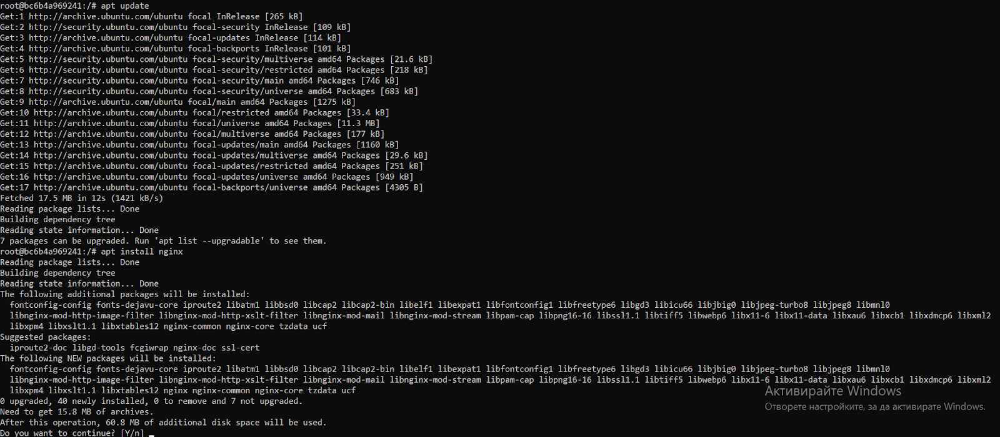

Какво е уеб сървър?

Източник: https://ruslanspivak.com/lsbaws-part1/
Уеб сървърът предоставя съдържанието на даден уебсайт (например текста, изображенията, информация от приложението) на клиента, който го изисква(рекуества). В общия случай нека приемем, че клиентът е уеб браузера, който изисква(рекуества) информация при клик на бутон от потребителя.
Уеб сървъра може да хоства повече от един уеб сайт(домейн), ползвайки едни и същи хардуерни ресурси, което е известно като „виртуален хостинг“. Освен за хостване на сайтове в интернет, уеб сървърите се ползват и за комуникация между уеб клиенти и сървъри в локална мрежа, например тази на работа. Пример за по-интересна употреба: има камери с вграден уеб сървър, което значи, че потребителят може да управлява камерата си чрез уеб браузър.
Сега след като разбрахме какво е уеб сървър, можем да навлезем в nginx.
Какво представлява nginx?
NginX, NGINX, или просто nginx (различни начини за изписване, всички са правилни), произнася се „енджинекс“, е проект с отворен код, създаден през 2004г. от Игор Сисоев. Основната цел тогава е била да разреши C10K проблема, или иначе най-просто казано идеята е била да се направи уеб сървър, който да може да обслужва огромно количество клиенти(заявки) по едно и също време.
Основните приложения на nginx са за HTTP сървър, обратно прокси(reverse proxy), лоуд балансер (load balancer), също така и IMAP/POP3 прокси сървър. Използван е от 33.7% от уеб сайтовете, някои от по-големите и познати клиенти са Netflix, Pinterest, CloudFlare, Airbnb, WordPress.com, GitHub, Eventbrite, Heroku и много други.
За да разберем по-добре как функционира nginx, ще си позволя да направя едно сравнение с Apache(също уеб сървър). Apache работи на принципа рекуест=нишка, тоест всяка нова заявка се пуска на отделна нишка. При nginx обаче нещата стоят по малко по-различен начин. Използват се събития(event-driven approach), което се оказва в пъти по-бързо и леко, все пак тук говорим за асинхронни операции! Интересното е, че причините да се направи по този начин са проблемите на Apache със скалируемостта и производителността, а целта на nginx е да ги пребори.
Архитектура на nginx
Нека първо направим разяснение относно процеси, нишки, събития, синхронни и асинхронни операции, за да схванем идеята на архитектурата.
Процес е всяка заредена в паметта програма, заедно с нейните ресурси. Ако имаме 5 инстанции на програмата, казваме, че имаме 5 отделни процеса. Процесите са независими един от друг. Нишката от друга страна е част от процеса. Има еднонишкови и многонишкови приложения, при една нишка няма нещо особено и интересно, но ако разгледаме многонишковите приложения веднага виждаме какво ги отличава – нишките в един процес споделят общи ресурси, комуникацията между нишките на един процес е доста по-бърза, отколкото между различните процеси. Един пример за процеси и нишки – създателите на Google Chrome са решили да ползват отделни процеси за всеки отделен отворен прозорец в браузера, което от своя страна има доста плюсове – защита на приложението от бъгове в машината за рендериране (целта й е да трансформира HTML-а и другите ресурси на устройството на потребителя), също така се ограничава достъпа на една такава машина до друга (понеже са отделни процеси).
Синхронните операции са блокиращи, тоест главната нишка се блокира, докато не се получи отговор(респонс). Асинхронните не са блокиращи, тъй като операцията се пуска на друга нишка(блокира се конкретната нишка) и по този начин освобождава главната нишка (main thread).
Архитектура, базирана на събития, означава, че приложението изпраща и консумира събития(Produce/Consume), а самото събитие е някакво действие, промяна на състоянието.
Повечето уеб сървъри(включително Apache) използват архитектура, базирана на нишки и процеси, която е по-проста и лесна за имплементиране, но не скалира добре в случаите, когато трябва да се обработят хиляди едновременни връзки(connections). В основата на nginx е архитектурата, базирана на събития.

Архитектура на nginx. Източник: nginx.com
Nginx използва горепоказания модел спрямо хардуерните ресурси, които машината има.
В основата е Master процесът, който е отговорен за операциите, за които са нужни привилегии, например четене на конфигурация, байндване на портове и създаването на child процеси(workers, cache loader, cache manager).
Cache loader процесът започва още при стартиране, за да зареди кеша в паметта, след това процесът приключва. Не изисква много ресурси.
Cache manager процесът се стартира периодично, за да изтрие кеширани записи в кешовете, като това се прави, за да не надвишава размера, който е в конфигурацията.
Worker процесите реално вършат цялата работа, те са еднонишкови и понеже са процеси, работят самостоятелно, като всеки слуша за събития(HTTP connection заявки). Когато има събитие, то се обработва асинхронно и не блокира другите събития.
Препоръчителната конфигурация е да се пусне по един worker процес за всяко ядро.
Как да използваме/конфигурираме nginx?
Конфигурационният файл се състои от директиви. Чрез него се управляват nginx модулите. Директивите са два вида: прости директиви и блокови директиви.
Проста директива(simple) се състои от име и параметри, разделени със спейсове, като завършва с (;).
Блоковата директива има същата структура като простата, но завършва с ({ и }) вместо с (;). Това дава възможност тя да съдържа в себе си други директиви, а това се нарича „контекст“. Например директивите http, server, location.
worker_rlimit_nofile 8192; #проста директива
events { #блокова директива
worker_connections 4096;
}
Ако директива се намира извън контекст, то се счита, че тя е в главния(main) контекст. Например директивата http се намира в главния контекст, server се намира в http контекста, а location се намира в server контекста.
http { #блокова директива
server { #блокова директива
}
}
Вече знаем как се изгражда конфигурационния файл, сега остава да разберем как да го напишем така, че да ни върши работа.
За да можем да визуализираме нашите статични ресурси – статични html страници, изображения, трябва да направим следното:
Понеже нашите ресурси се намират в различни папки, например html страниците са в /home/www, а изображенията са в /home/images, то ще трябва да обозначим, че имаме две различни локации, тоест ще трябва да направим промени в блока http, където е блокът server, където пък се намира блокът location – там ще трябва да добавим съответните location блокове.
server {
location / {
root /home/www;
}
location /images/ {
root /home;
}
}
За да се определи рекуестът към кой location ще отиде, се взима параметъра (тоест в двата случая съответно „/“ и „/images/“). Ако например имаме рекуест от http://localhost/images/example.png , то мачваме „/images/“. Какво обаче става, ако имаме повече от един location, който мачва даден URI? Взима се най-дългия префикс, тоест най-дългия location. В нашия пример по-горе „/“ също мачва, но е по-къс префикст от „/images/“. Пояснение: root също е директива, идеята е, че ползваме нея за мачване, тоест добавяме /images/ към root /home;
Конфигуриране на прокси сървър
Една от най-честите употреби на nginx е като прокси сървър, което значи, че приема рекуестите,предава ги на сървърите, които стоят зад него (сървърите,които са проксирани), взима отговор от тях и го връща на потребителя.
Ще конфигурираме много простичък прокси сървър, като използваме предните примери. Ще го конфигурираме така че рекуестите, които са за изображенията, да минават директно към локалната директория, а всички други ще се изпращат до проксирания сървър.
Понеже nginx ни дава възможност да дефинираме повече от един сървър, ще дефинираме нашите два сървъра на единствената ни nginx инстанция. Първо ще дефинираме прокси сървъра като добавим още един server блок:
server {
listen 8080;
root /home/up1;
location / {
}
}
Това е сървър, който слуша на порт 8080 и мапва(насочва) всички рекуести към /data/up1 директорията на локалната файлова система. Създаваме файл index.html и го слагаме в директорията.
След това ще използваме предната конфигурация на сървъра, като ще я променим така че да стане за прокси сървър (добавяме директивата proxy_pass http://localhost:8080; ), като тя ни указва името и порта на проксирания сървър, тоест localhost:8080.
server {
location / {
proxy_pass http://localhost:8080;
}
location /images/ {
root /home;
}
}
Ще променим втория location блок, като ще направим така че да използва регулярен израз и конкретен суфикс, тоест вече имаме блок, който мачва всички URI, които завършват с .jpg, .gif, .png и ги насочва към папката /home/images
server {
location / {
proxy_pass http://localhost:8080;
}
location ~ \.(gif|jpg|png)$ {
root /home/images;
}
}
Това беше накратко за тази конфигурация. В демо секцията може да следвате стъпките и сами да конфигурирате nginx!
Nginx виртуални хостове?
Виртуалните хостове в Nginx се наричат просто „сървър блокове“, тоест това са онези блокове server {} от конфигурацията.
Те позволяват да се хостват множество сайтове на един сървър. Хостването на множество сайтове на една единствена машина спестява пари(използваме една машина) и време(за конфигурация).
Всеки един домейн е самостоятелен, тоест той има отделна директория за файловете, отделни политики за сигурност, отделни ssl сертификати.
Пример:
Ще направим различни директории за нашите примерни домейни – domain1.com, domain2.com. Директориите трябва да са със следната структура:
/home/www/
├── domain1.com
│ └── public_html
├── domain2.com
│ └── public_html
Като в директориите с име public_html се съхраняват файловете на конкретния уебсайт. Създаваме в директорията /home/www/domain1.com/public_html файл с име index.html с примерно съдържание:
<!DOCTYPE html>
<html lang="en" dir="ltr">
<head>
<meta charset="utf-8">
<title>Welcome to domain1.com</title>
</head>
<body>
<h1>Success! domain1.com home page!</h1>
</body>
</html>
Сега остава да конфигурираме server блоковете. Конфигурационния файл се намира в /etc/nginx/sites-available
Създаваме файл(препоръчително с името на домейна):
server {
listen 80;
listen [::]:80;
root /var/www/domain1.com/public_html;
index index.html;
server_name domain1.com www.domain1.com;
access_log /var/log/nginx/example.com.access.log;
error_log /var/log/nginx/example.com.error.log;
location / {
try_files $uri $uri/ =404;
}
}
За да работи nginx с файла, който направихме сега, е нужно да създадем symbolic link към /etc/nginx/sites-enabled/:
sudo ln -s /etc/nginx/sites-available/domain1.com /etc/nginx/sites-enabled/
Рестартираме nginx и вече имаме нов сървър блок. Подробно демо на тези стъпки може да се види в секция „Демо“.
Демо
В демото ще покажа как да инсталирате и конфигурирате nginx. Ще използвам docker for desktop, освен това ще ни е нужен и dockerhub акаунт.
Стъпка 1: Ще използваме ubuntu, за целта след като вече сме изтеглили docker for desktop и сме го пуснали, влизаме в cmd(windows) или терминала. Логваме се в dockerhub акаунта си с командата: docker login
Стъпка 2: След успешен логин, вече можем да изтеглим имиджа на ubuntu. Изпълняваме комадата docker pull ubuntu

Стъпка 3: Вдигаме контейнер с изтегления имидж. Това се случва с командата docker run -it ubuntu:latest
Стъпка 4: Инсталиране на nginx. Това се случва с ubuntu package мениджъра, който е apt. Изпълняваме командите apt update && apt install nginx>

След тези стъпки вече трябва да имаме работещ nginx. За да верифицираме, правим curl. Понеже ubuntu не се шипва с кърл, ще трябва да го инсталираме с apt.
apt install curl
Преди да пробваме дали работи, ще трябва все пак да стартираме nginx с командата service nginx start
Вече имаме curl и можем да изпълним curl http://localhost

След като верифицирахме, че работи, вече можем да направим първия си виртуален хост. По дефолт html файловете са в директорията /var/www , но ние ще направим нова директория там, която ще е за нашия виртуален хост
cd /var/www
sudo mkdir tutorial
cd tutorial
vim index.html
Внимание! На убунту контейнера също липсва и vim, така че ще трябва да се инсталира допълнително с командата apt install vim
Във файла index.html поставяме следния html:
<!doctype html>
<html>
<head>
<meta charset="utf-8">
<title>Hello, Nginx!</title>
</head>
<body>
<h1>Hello, Nginx!</h1>
<p>We have just configured our Nginx web server on Ubuntu Server!</p>
</body>
</html>
Вече имаме файла и е време да създадем виртуалния хост. Както споменах в раздел “Виртуални хостове”, конфигурациите се намират в директорията /etc/nginx/sites-enabled Изпълняваме:
cd /etc/nginx/sites-enabled
vim tutorial
Във файла tutorial поставяме следния код:
server {
listen 81;
listen [::]:81;
server_name example.ubuntu.com;
root /var/www/tutorial;
index index.html;
location / {
try_files $uri $uri/ =404;
}
}
Почти сме готови, остана само да рестартираме nginx
service nginx restart
и отново да направим curl, този път на порт 81

Източници
За страницата 'За nginx':
За страницата 'Архитектура':
За страницата 'Конфигурация':
За страницата 'Виртуални хостове':